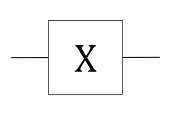
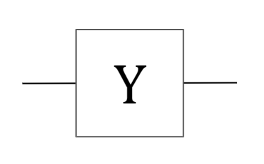
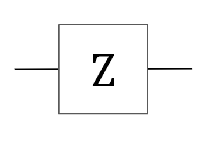
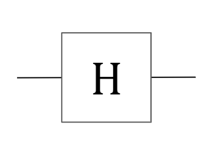
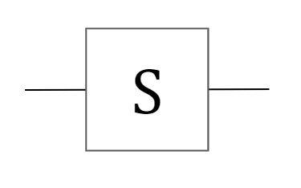
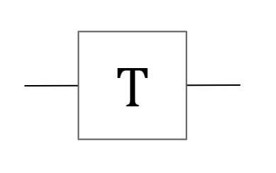
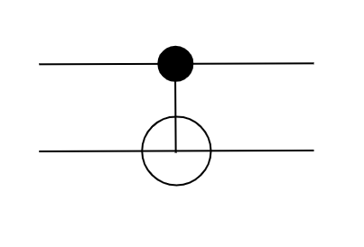
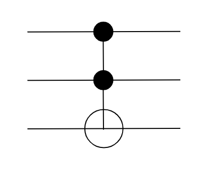

| Stability | experimental |
|---|---|
| Safe Haskell | None |
| Language | Haskell2010 |
FunQ
Description
Exports the language and simulator
Synopsis
- new :: Bit -> QM QBit
- measure :: QBit -> QM Bit
- ndist :: Int -> QM Bit -> IO ()
- dist :: QM Bit -> IO ()
- controlbit :: QM a -> Bit -> QM ()
- data QBit
- data Bit
- data QM a
- pauliX :: QBit -> QM QBit
- pauliY :: QBit -> QM QBit
- pauliZ :: QBit -> QM QBit
- hadamard :: QBit -> QM QBit
- phase :: QBit -> QM QBit
- phasePi8 :: QBit -> QM QBit
- cnot :: (QBit, QBit) -> QM (QBit, QBit)
- identity :: QBit -> QM QBit
- swap :: (QBit, QBit) -> QM (QBit, QBit)
- tdagger :: QBit -> QM QBit
- fredkin :: (QBit, QBit, QBit) -> QM (QBit, QBit, QBit)
- toffoli :: (QBit, QBit, QBit) -> QM (QBit, QBit, QBit)
- run :: QM a -> IO a
- runDebug :: QM a -> IO a
- bell :: (Bit, Bit) -> QM (QBit, QBit)
- bellMeasure :: (QBit, QBit) -> QM (Bit, Bit)
Core operations
new :: Bit -> QM QBit Source #
Create new QBit from a bit.
maps \(0 \mapsto |0>\) and \(1 \mapsto |1>\)
ndist :: Int -> QM Bit -> IO () Source #
Run a quantum program producing a single bit reps times
and print the results
controlbit :: QM a -> Bit -> QM () Source #
Sets a classical bit as the controlbit for a quantum gate. Making it run only when the classical bit is equal to one.
Core types
Pointer to a qubit in QState. Represents the linking function in QLambda
Instances
| Bounded Bit | |
| Enum Bit | |
| Eq Bit | |
| Fractional Bit | |
| Integral Bit | |
| Num Bit | |
| Ord Bit | |
| Read Bit | |
| Real Bit | |
Defined in Data.Bit.Internal Methods toRational :: Bit -> Rational # | |
| Show Bit | |
| Generic Bit | |
| Bits Bit | |
Defined in Data.Bit.Internal | |
| FiniteBits Bit | |
Defined in Data.Bit.Internal Methods finiteBitSize :: Bit -> Int # countLeadingZeros :: Bit -> Int # countTrailingZeros :: Bit -> Int # | |
| NFData Bit | |
Defined in Data.Bit.Internal | |
| Unbox Bit | |
Defined in Data.Bit.Internal | |
| MVector MVector Bit | |
Defined in Data.Bit.Internal Methods basicLength :: MVector s Bit -> Int basicUnsafeSlice :: Int -> Int -> MVector s Bit -> MVector s Bit basicOverlaps :: MVector s Bit -> MVector s Bit -> Bool basicUnsafeNew :: PrimMonad m => Int -> m (MVector (PrimState m) Bit) basicInitialize :: PrimMonad m => MVector (PrimState m) Bit -> m () basicUnsafeReplicate :: PrimMonad m => Int -> Bit -> m (MVector (PrimState m) Bit) basicUnsafeRead :: PrimMonad m => MVector (PrimState m) Bit -> Int -> m Bit basicUnsafeWrite :: PrimMonad m => MVector (PrimState m) Bit -> Int -> Bit -> m () basicClear :: PrimMonad m => MVector (PrimState m) Bit -> m () basicSet :: PrimMonad m => MVector (PrimState m) Bit -> Bit -> m () basicUnsafeCopy :: PrimMonad m => MVector (PrimState m) Bit -> MVector (PrimState m) Bit -> m () basicUnsafeMove :: PrimMonad m => MVector (PrimState m) Bit -> MVector (PrimState m) Bit -> m () basicUnsafeGrow :: PrimMonad m => MVector (PrimState m) Bit -> Int -> m (MVector (PrimState m) Bit) | |
| Vector Vector Bit | |
Defined in Data.Bit.Internal Methods basicUnsafeFreeze :: PrimMonad m => Mutable Vector (PrimState m) Bit -> m (Vector Bit) basicUnsafeThaw :: PrimMonad m => Vector Bit -> m (Mutable Vector (PrimState m) Bit) basicLength :: Vector Bit -> Int basicUnsafeSlice :: Int -> Int -> Vector Bit -> Vector Bit basicUnsafeIndexM :: Monad m => Vector Bit -> Int -> m Bit basicUnsafeCopy :: PrimMonad m => Mutable Vector (PrimState m) Bit -> Vector Bit -> m () | |
| type Rep Bit | |
Defined in Data.Bit.Internal | |
| data Vector Bit | |
Defined in Data.Bit.Internal | |
| data MVector s Bit | |
Defined in Data.Bit.Internal | |
The Quantum Monad Keeps a state of the complex vector representation while allowing pseudo-random number generation
Gates
pauliX :: QBit -> QM QBit Source #
Pauli-X gate
\[ \text{X} = \begin{bmatrix} 0 & 1 \\ 1 & 0 \end{bmatrix} \]

pauliY :: QBit -> QM QBit Source #
Pauli-Y gate
\[ \text{Y} = \begin{bmatrix} 0 & -i \\ i & 0 \end{bmatrix} \]

pauliZ :: QBit -> QM QBit Source #
Pauli-Z gate
\[ \text{Z} = \begin{bmatrix} 1 & 0 \\ 0 & -1 \end{bmatrix} \]

hadamard :: QBit -> QM QBit Source #
Hadamard gate
\[ \text{X} = \frac1{\sqrt2} \begin{bmatrix} 0 & 1 \\ 1 & 0 \end{bmatrix} \]

phase :: QBit -> QM QBit Source #
Phase gate
\[ \text{S} = \begin{bmatrix} 1 & 0 \\ 0 & i \end{bmatrix} \]

phasePi8 :: QBit -> QM QBit Source #
Pi/8 gate (T gate)
\[ \text{T} = \begin{bmatrix} 1 & 0 \\ 0 & e^{i\pi/4} \end{bmatrix} \]

cnot :: (QBit, QBit) -> QM (QBit, QBit) Source #
CNOT gate
\[ \text{CNOT} = \begin{bmatrix} 1 & 0 & 0 & 0 \\ 0 & 1 & 0 & 0 \\ 0 & 0 & 0 & 1 \\ 0 & 0 & 1 & 0 \end{bmatrix} \]

identity :: QBit -> QM QBit Source #
Identity gate
\[ \text{I} = \begin{bmatrix} 1 & 0 \\ 0 & 1 \end{bmatrix} \]
swap :: (QBit, QBit) -> QM (QBit, QBit) Source #
SWAP gate
\[ \text{SWAP} = \begin{bmatrix} 1 & 0 & 0 & 0 \\ 0 & 0 & 1 & 0 \\ 0 & 1 & 0 & 0 \\ 0 & 0 & 0 & 1 \end{bmatrix} \]

toffoli :: (QBit, QBit, QBit) -> QM (QBit, QBit, QBit) Source #
Toffoli gate
\[ \begin{bmatrix} 1 & 0 & 0 & 0 & 0 & 0 & 0 & 0 \\ 0 & 1 & 0 & 0 & 0 & 0 & 0 & 0 \\ 0 & 0 & 1 & 0 & 0 & 0 & 0 & 0 \\ 0 & 0 & 0 & 1 & 0 & 0 & 0 & 0 \\ 0 & 0 & 0 & 0 & 1 & 0 & 0 & 0 \\ 0 & 0 & 0 & 0 & 0 & 1 & 0 & 0 \\ 0 & 0 & 0 & 0 & 0 & 0 & 0 & 1 \\ 0 & 0 & 0 & 0 & 0 & 0 & 1 & 0 \end{bmatrix} \]

Simulators
runDebug :: QM a -> IO a Source #
Run quantum program, prints the final quantum state and returns the result